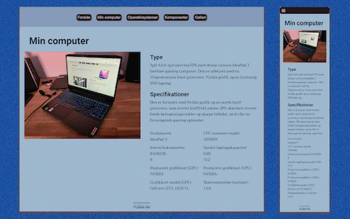
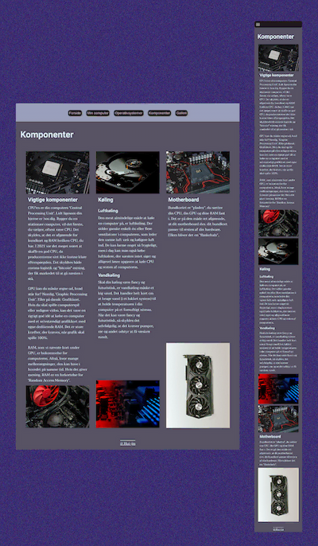
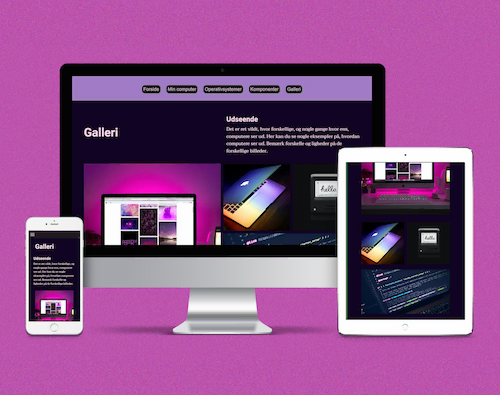

Jeg har fuldført studiestartsprøven ved at skabe et website, der anvender
forskellige
grid- og
flex-layouts og samtidig er responsiv. At skabe et website med varierende layout viste sig at
være
en betydelig udfordring. Jeg stod over for komplekse problemer undervejs, men disse udfordringer
har
bidraget til min dybere forståelse af websites struktur. Specielt har jeg fået en øget
indsigt i anvendelsen af media queries, grid og flex i webudvikling.
Denne erfaring har været afgørende for min dygtiggørelse, idet den har tilladt mig at lære mere
omkring
de underliggende principper i opbygningen af websites. Især har arbejdet med responsivitet og de
nævnte
layoutteknologier som grid og flex givet mig en forståelse for, hvordan man skaber en dynamisk
og
tilpasningsdygtig webside.